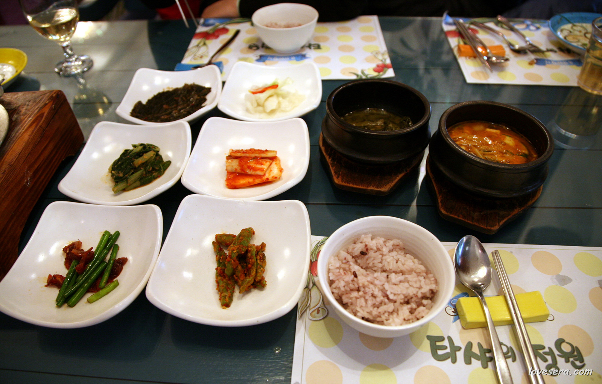
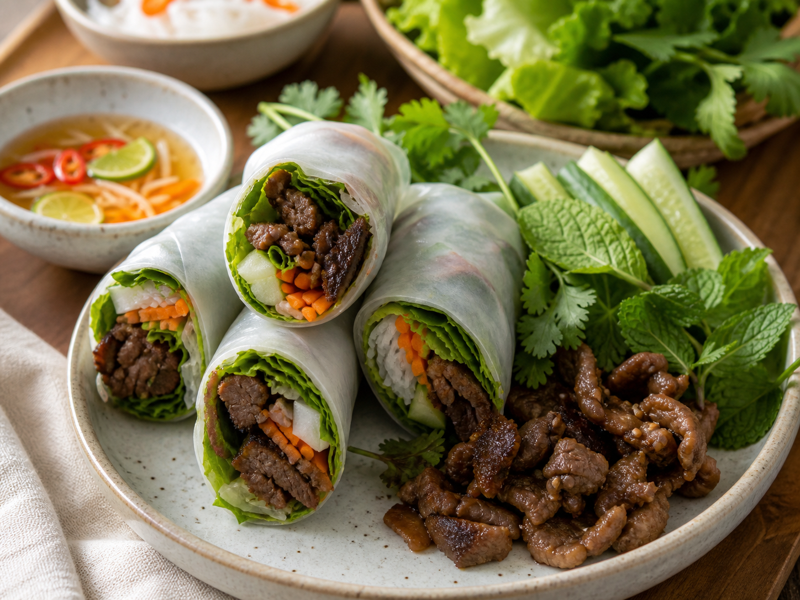
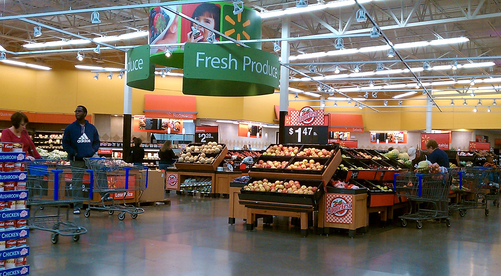
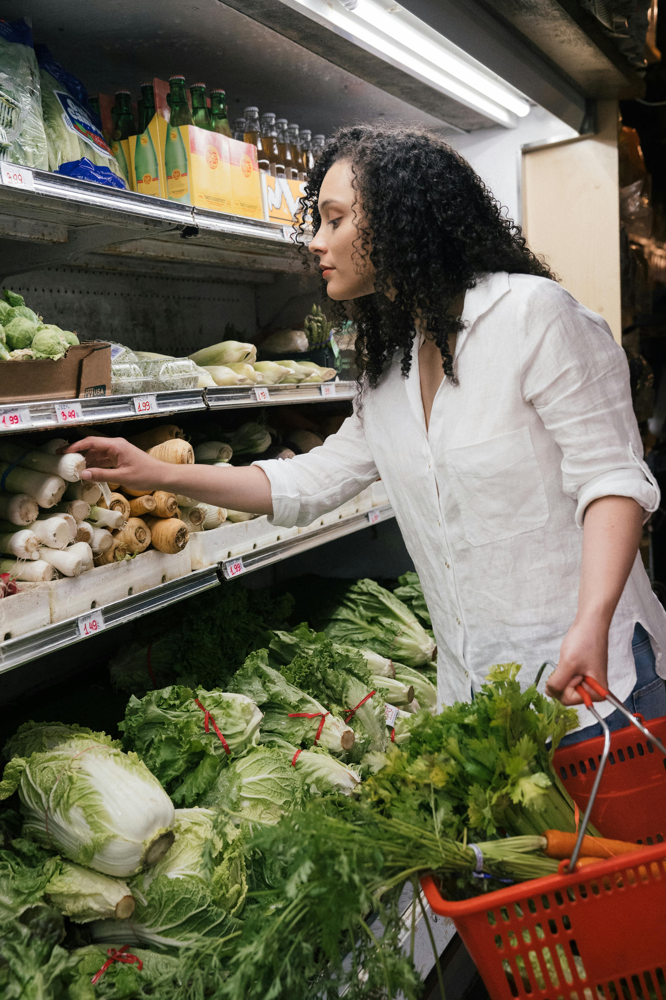

오늘 식탁과 엄마의 회복을 먼저 챙기는 방
1층은 집에 들어오자마자 바로 필요한 것들을 모으는 공간입니다. 오늘 뭐 먹을지, 어디서 장볼지, 엄마가 언제 잠깐 쉴 수 있을지를 빠르게 고를 수 있게 구성합니다.
Vietnamese Mom · Korean-Vietnam Family
베트남 엄마의 따뜻한 루틴을 한-베 가족의 생활 가이드로 나눕니다.
요리, 장보기, 육아 루틴, 한국 가족과 베트남 가족 사이의 작은 문화 차이까지. 매일 직접 부딪히며 배운 내용을 다른 다문화 가족도 바로 따라 할 수 있게 정리합니다.
🍲 한식+베트남식 식단
👶 25개월 육아 루틴
🌸 엄마 회복 시간
한-베 식탁 캘린더
한국 음식과 베트남 음식을 번갈아 준비할 수 있게 장보기 목록까지 연결한 7일 식단 아이디어입니다.
오늘 식단 보기 →육아·가족 소통 노트
한국어/베트남어가 섞이는 집에서 아이 말문, 조부모 소통, 하루 루틴을 부드럽게 맞추는 팁을 모았습니다.
육아 노트 보기 →엄마의 작은 회복
음악, 짧은 스트레칭, 감사 일기처럼 돈 들이지 않고 바로 회복감을 만드는 루틴을 제공합니다.
힐링 루틴 보기 →
한-베 엄마들의 장보기·식단·육아 팁을 모으는 무료 커뮤니티와 가이드를 열었습니다.

매일 업데이트 · 오늘의 한-베식단
완성 예시: 달콤한 불고기, 오이, 허브를 라이스페이퍼에 말아 바로 먹는 주메뉴
오늘의 멋진 밥상: 불고기 월남쌈 정식
한국식 달콤한 불고기를 베트남 라이스페이퍼와 허브에 싸 먹는 저녁 메뉴입니다. 아이는 밥반찬으로, 어른은 느억맘 라임 소스로 가볍게 즐길 수 있습니다.

주메뉴 레시피: 간장 불고기 월남쌈
- 소고기 불고기감 300g에 간장 3큰술, 설탕 1큰술, 다진 마늘 1큰술, 참기름 1큰술, 후추를 넣고 15분 재웁니다.
- 양파와 당근을 얇게 썰어 고기와 함께 센 불에서 빠르게 볶아 물이 많이 생기지 않게 합니다.
- 라이스페이퍼, 상추, 오이, 고수, 민트, 삶은 쌀국수면을 접시에 나눠 담습니다.
- 아이 접시에는 불고기와 밥, 계란말이를 먼저 담고, 어른은 라이스페이퍼에 불고기와 허브를 싸서 먹습니다.
- 느억맘 1큰술, 라임즙 1큰술, 물 2큰술, 설탕 1작은술을 섞어 어른용 소스로 곁들입니다.
대체 재료: 소고기 대신 돼지고기 앞다리살이나 닭다리살을 써도 좋습니다. 아이가 허브 향을 어려워하면 상추와 오이만 먼저 주세요.
매일 업데이트
오늘 바로 써야 하는 가벼운 생활 정보는 매일 바꿉니다.
- 식단오늘 저녁 추천 메뉴, 아이가 먹기 쉬운 대체 재료, 남은 반찬 활용법
- 장보기오늘 필요한 품목, 마트별 간단 메모, 떨어지기 쉬운 기본 식재료
- 회복10~20분 스트레칭, 음악 검색 키워드, 감사 일기 질문 하나
- 육아아이 컨디션 메모, 낮잠/식사 리듬, 가족에게 공유할 짧은 알림
주간 업데이트
비교표와 가이드는 한 주 단위로 묶어 정리합니다.
- 7일 식단한식/베트남식 균형, 아이 반찬 후보, 장보기 묶음 목록
- 마트 비교WinMart, Lotte Mart, K-Market 가격·품목·대체 구매처 정리
- 콘텐츠엄마 페이지에서 반응이 좋았던 주제를 블로그 글감과 무료 자료로 확장
- 점검모바일 화면, 링크, 커뮤니티 문의, 공동구매 후보를 금요일에 확인
이번 주에 다시 보러 올 이유
주간 자료는 읽고 끝나는 글이 아니라 저장하고 쓰는 생활 키트로 업데이트합니다.
매주 금요일까지 식단, 마트 비교, 무료자료, 화면 점검을 한 번에 새로 묶습니다. 고객은 이번 주 가족 식탁과 장보기 결정을 빠르게 가져가고, 운영자는 반응이 좋은 주제를 다음 콘텐츠로 확장합니다.
7일 식단 캘린더
한식과 베트남식을 번갈아 배치해 가족이 질리지 않게 보는 식단표입니다.
- 아이 반찬, 어른 반찬, 남은 재료 활용을 한 줄로 정리
- 월요일 장보기와 주중 보충 장보기를 따로 표시
- 저장용 이미지로 공유해 커뮤니티 재방문을 유도

마트 비교 보드
WinMart, Lotte Mart, K-Market에서 어디를 먼저 갈지 바로 고르게 만듭니다.
- 쌀, 우유, 과일, 아이 간식처럼 반복 구매 품목 중심 비교
- 비싸면 대체할 수 있는 베트남 로컬 구매처 메모
- 이번 주 특가와 사지 않아도 되는 품목을 함께 표시
콘텐츠 확장
반응이 좋은 생활 팁은 블로그, 체크리스트, 무료 다운로드로 키웁니다.
- 댓글과 문의가 많은 질문을 다음 주 카드 제목으로 반영
- 식단표, 준비물표, 가족 공유 메모를 다운로드 자료로 제작
- 공동구매나 제휴 후보는 별도 메모로 분리

금요일 화면 점검
업데이트가 실제 고객 화면에서 보기 좋은지 주 1회 확인합니다.
- 모바일 첫 화면, 버튼, 링크, 이미지 로딩 상태 확인
- 커뮤니티 참여 버튼과 문의 동선을 직접 눌러 점검
- 다음 주에 바꿀 카드와 유지할 카드를 결정
엄마의 힐링 공간 🌸
오늘 하루 나만을 위한 시간과 온가족 사랑 채우기 (Góc của Mẹ)
🍽️ 오늘 뭐 먹지? 요리 룰렛
한베 가족의 입맛에 딱 맞춘 요리를 추천합니다!
오늘의 당첨 메뉴는...
음식명
한베 가족 추천 코멘트
🎵 나만의 힐링 사운드 검색
원하는 음악이나 자연 소리를 키워드로 검색하여 미니 창 안에서 편안하게 감상해보세요.
🌸 오늘의 힐링 루틴
0%
포근한 시작 🌱
남은 루틴: 5개